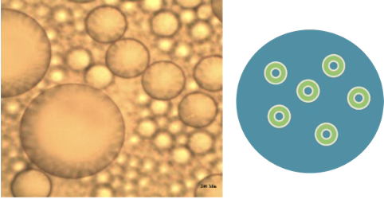
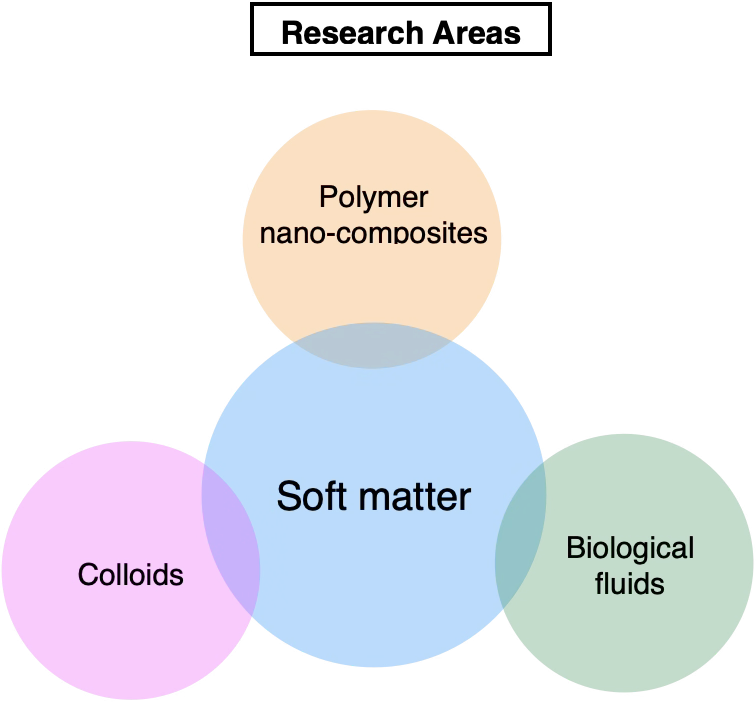
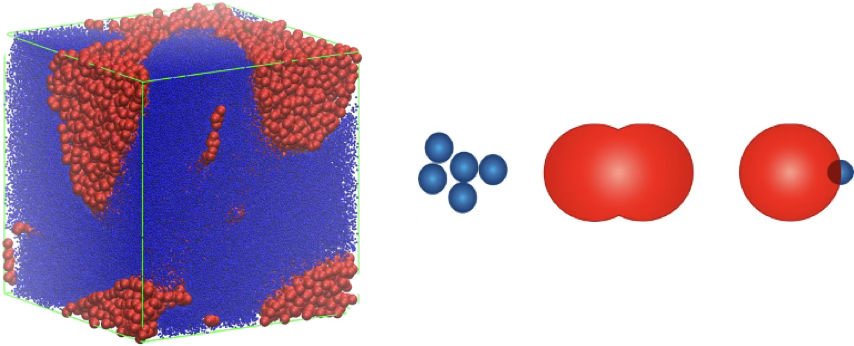

Pharmaceutical Soft Matter
Emulsions & Drug Precipitation
Multiscale modeling of multiple emulsions as confined environments for drug nucleation, crystallization, precipitation, and formulation design.
Soft Matter & Complex Fluids
Soft Matter & Complex Fluids
We investigate how molecular interactions, microstructure, and dynamics govern the macroscopic behavior of soft matter systems. Our approach combines theoretical modeling, coarse-grained simulations, multiscale computation, and microstructural analysis to develop predictive frameworks for complex fluids and functional materials.

Research Directions
The Dhumal Lab investigates soft matter systems by connecting molecular-scale interactions with microstructure, phase behavior, transport, and macroscopic properties.

Pharmaceutical Soft Matter
Multiscale modeling of multiple emulsions as confined environments for drug nucleation, crystallization, precipitation, and formulation design.

Colloids
Theory and simulation of how particle size distributions and interactions influence aggregation, phase behavior, microstructure, and material response.

Functional Materials
Understanding how particle geometry, concentration, and polymer-particle interactions control dispersion, self-assembly, and structure-property relationships.

Biological Soft Matter
Coarse-grained and multiscale approaches for understanding interactions, organization, and transport in protein-based soft matter systems, including β-lactoglobulin.
Research Approach
Our work combines complementary theoretical and computational tools across multiple length and time scales.
Principal Investigator
Assistant Professor
Department of Chemical Engineering
SRICT, UPL University of Sustainable Technology
Ankleshwar, Gujarat, India
Research interests include soft matter, complex fluids, colloidal dispersions, polymer nanocomposites, biological fluids, coarse-grained modeling, molecular simulation, and structure-property relationships.
Scholarship
Research publications spanning soft matter, colloidal systems, polymer nanocomposites, molecular simulation, phase behavior, and complex fluids.
Teaching
Courses, teaching activities, lecture resources, and student learning materials will be available here.
Join the Lab
Motivated undergraduate and postgraduate students interested in soft matter, molecular simulation, colloids, polymers, complex fluids, and computational chemical engineering are encouraged to contact the lab.
Contact
Dr. Umesh Dhumal
Assistant Professor
Department of Chemical Engineering
SRICT, UPL University of Sustainable Technology
Ankleshwar, Gujarat, India
Email
umesh.dhumal@upluniversity.ac.in
umesh.dhumal007@gmail.com